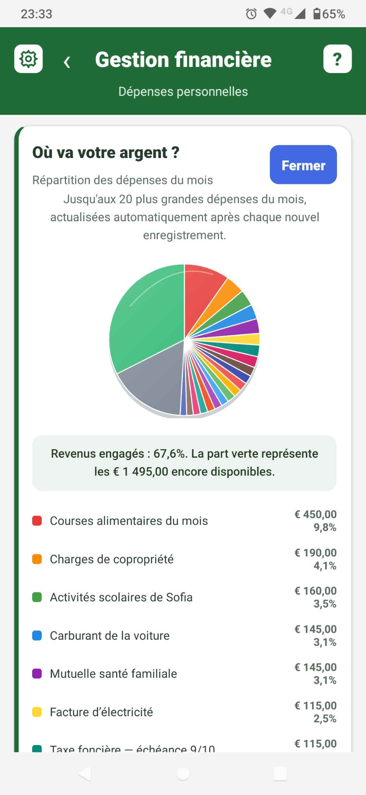

Gestion financière
Suivez dépenses, salaire, revenus complémentaires, paiements, abonnements et montants récurrents.
Paix Financière · Gestion financière et organisation personnelle
Paix Financière, anciennement connue sous les noms MyMoney, MeuDinheiro et MiDinero, réunit finances personnelles, tâches, notes et rappels dans une seule application Android.
Paix Financière est une application Android pour suivre les dépenses, gérer les revenus, organiser les tâches et conserver des notes personnelles.
Finances personnelles et organisation sur téléphone et ordinateur. L’édition Windows est en préparation et n’est pas encore disponible à l’installation publique.
L’édition Windows devrait proposer des fonctions essentielles gratuites sans publicité et un accès Pro par achat unique sur le Microsoft Store. Les achats Android et Windows seront indépendants.
Interface adaptée à l’ordinateur, plein écran, dépenses et revenus, tâches, notes, journal, graphiques, objectifs d’épargne, rapports PDF et sauvegardes locales protégées. Sept langues et options d’apparence. Certaines fonctions dépendent de l’édition, de la licence et des autorisations Windows.
Politique de confidentialité (Android et Windows)
Les tutoriels, captures et informations Android ci-dessous restent valables pour l’édition mobile.
Gestion financière et organisation personnelle
Suivez dépenses, salaire, revenus complémentaires, paiements, abonnements et montants récurrents.
Créez des tâches, rappels et notes personnelles en texte ou en voix.
Consultez graphiques, calendrier financier et indicateurs utiles.
Utilisez un PIN de 8 à 16 chiffres et un stockage local chiffré.
Ces captures réelles montrent l’interface française de manière claire et discrète.


Regardez la vidéo officielle en français ou ouvrez la playlist complète avec toutes les langues disponibles.
Les fonctions principales de finances, tâches et notes fonctionnent localement. Certaines fonctions externes nécessitent une connexion.
Oui. L’application a été renommée et conserve le même package Android : com.anspro.mymoney.app.
Le pied de page contient un lien vers la version détaillée en anglais.
Paix Financière est une application Android dédiée aux finances personnelles et à l’organisation du quotidien. Package : com.anspro.mymoney.app · Contact : moneyproapp@gmail.com
Paix Financière est disponible en portugais, anglais, espagnol, français, allemand, italien et indonésien.
Dépenses, salaire, revenus complémentaires, échéances, abonnements et paiements récurrents.
Prévisions, graphiques, calendrier, rapports PDF et outils de planification de l’épargne.
Tâches, pourcentages d’avancement, notes textuelles et vocales, OCR local de photos choisies.
Achat unique donnant accès à des outils supplémentaires, un journal et des sauvegardes locales automatiques.
PIN de 8 à 16 chiffres, biométrie compatible, chiffrement des données structurées et sauvegardes v4.
Rappels locaux et communications Firebase facultatives dans sept langues sur les versions compatibles.
Quinze thèmes, dont Vert classique et Thème sombre, avec interface en sept langues.
Fonctions essentielles gratuites avec annonces selon les réglages de confidentialité ; Pro sans bannières.
Des méthodes simples pour suivre votre budget et les échéances.